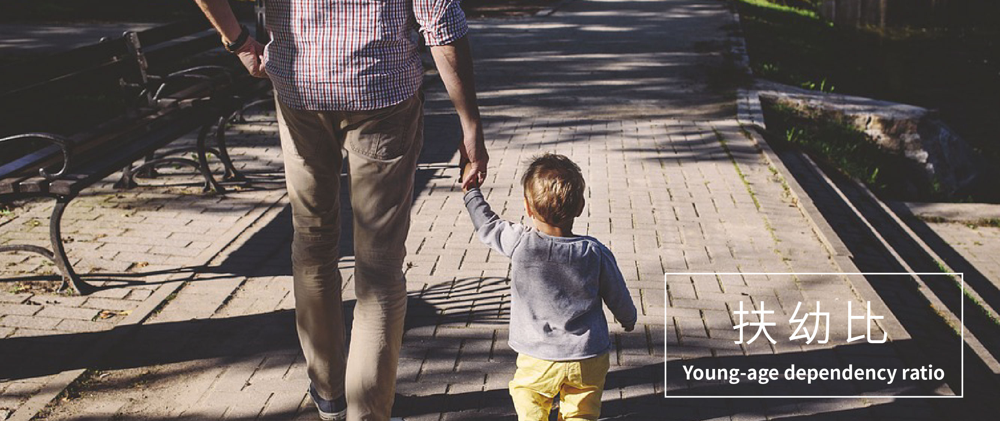

{% extends 'base.html' %}

{% block title %}首頁{% endblock %}
{% block content %}
    <div class="blank middle-content">
        <!-- start content_slider -->
        <div id="owl-demo" class="owl-carousel text-center">
            <div class="item">
                
            </div>
            <div class="item">
                
            </div>
            <div class="item">
                
            </div>
            <div class="item">
                
            </div>
        </div>
    </div>
    <!--//sreen-gallery-cursual---->
    <!-- requried-jsfiles-for owl -->
    <link href="../static/css/owl.carousel.css" rel="stylesheet">
    <script src="../static/js/owl.carousel.js"></script>
    <script>
        $(document).ready(function() {
            $("#owl-demo").owlCarousel({
                items : 1,
                lazyLoad : true,
                autoPlay : true,
                pagination : true,
                nav:true,
            });
        });
    </script>
    <!-- //requried-jsfiles-for owl -->
{% endblock %}